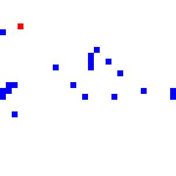
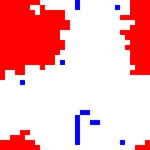
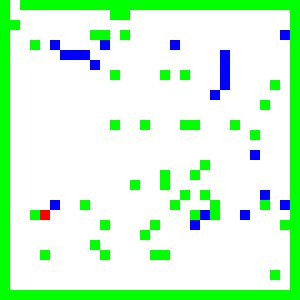
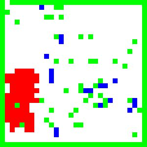
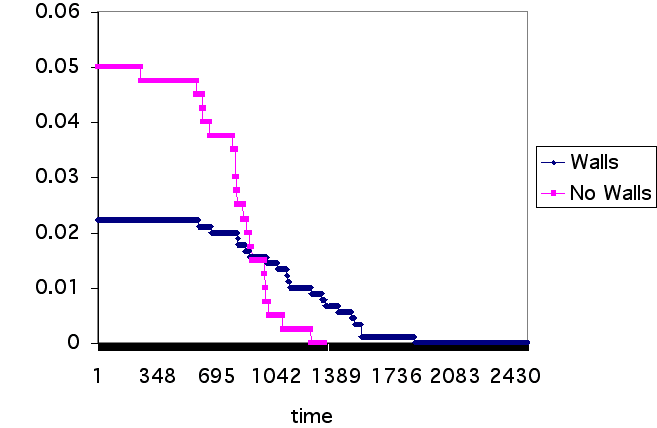
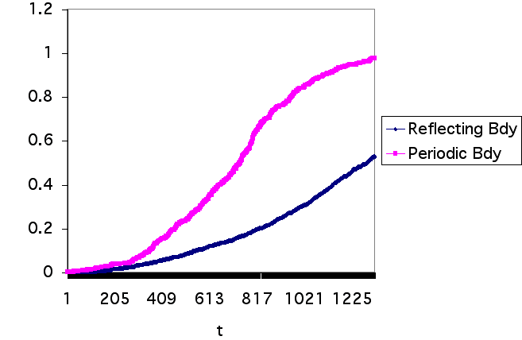

Nandi Leslie and Suresh Naidu
July 14, 2003
Consider a fire in a room filled with human agents. People panic, coordinate, try to flee, and condition these actiosn of the behaviors of others. In short, it is a good scenario for examining diverse behaviors and learning rules in a population of simulated agents. In this paper, we develop a spatially explicit agent-based model which examines a particular scenario for the reaction of individuals to what begins as a small fire in an enclosed room with no exit.We first consider a simple model of a room divided into a homogeneous two-dimensional integer lattice comprised of patches or cells, with periodic boundary conditions. Our second model incorporates a reflective boundary and obstacles that block both fire and agents. For each patc, we store the following possible states: vacant = 0; occupied by an individual = 1; on fire = 2, and wall =3. Generally, the size of the simulation area is 20x20, with a single cell corresponding to the amount of space which an individual person might occupy. Additionally, we assume that there are only 20 individuals within the room.
In the first model, we assume that all sites in L are flammable, and in the second only cells with walls are inflammable. When a fire initially enters the room, it encompasses a single site. The fire may then spread at rate p, to any of its adjacent sites in its von Neumann neighborhood N whether the adjacent sites are occupied or vacant. If there is an agent at the site, it is destroyed.
Initially, we choose a random direction for the agents to follow. However, in the subsequent runs of the model, the agents have the ability to look ahead one site in their neighborhood N. If there is another agent directly in front of a current agent, we update the current agent's direction to be identical to the perceived agents. If there is a fire in the perceived site, then the current agent reverses direction.
The transition rules are as follows for our landscape. We assume that
the rate of conversion of an occupied or vacant site to a site on fire
is given by a*n, where n is the fraction of nearest
neighbors on fire. The individuals which are located on sites that
catch on fire in the next time step are killed. Each individual moves to
one of its nearest neighbors at a rate
u(d), where d is the direction of choice for the agent. This
movement is usually in a single chosen direction, but it is suppressed, if
the site is already occupied. Moreover, if a site is on fire and a
neighboring site is occupied by an individual who intends to move, then
the individual will automatically choose the direction which is opposite
that of the fire. If movement is successful, then the site of previous
occupation becomes vacant.
|  |  | |
| Figure 1 | Figure 2 |
Typical results are shown in Figures 1 and 2 of the snapshots of the landscape at different times. In Figures 1 and 2, these are plots of the landscape with periodic and reflecting boundary conditions, respectively. As expected, the fire starts at a particular location, and after many runs the fire consumes the room. In Figure 1, since the size of the entire landscape is quite limited, and we have periodic boundary conditions, the fire immediately spreads to opposite sides of the room. This model acts very similar to the Richardson model, a pure birth process, without possibility of death because the fire has competitive dominance for space. That is, it may occupy any site on the lattice. In Figure 2, the fire also quickly encroaches on the room, destroying everything, which it encounters except the walls and non-flammable objects in the room.
|  |  | |
| Figure 3 | Figure 4 |
In Figure 3, we plot the time series for the fraction of agents for both
the models with reflecting and periodic boundary conditions. If we
consider the landscape with reflecting boundaries, the agents are
consumed quicker by the fire than for the model run with periodic
boundaries. Inituitively, this makes sense because the fire is able to
spread a greater distance. In Figure 4, we plot the time series for the
fraction of sites on fire. In this instance as well, the fire spreads
more quickly over the landscape for the model run with periodic boundary
conditions for the same reason that agents are extinguished at a greater
speed in the model with periodic conditions. That is, the fire is allowed
to cross "boundaries", since it is evaluated on a torus.
|  |  | |
| Figure 5 | Figure 6 |
Some obvious extensions include more complicated decision/imitation rules,
as well as allowing agents to change their direction autonomously,
perhaps as a random walk. Allowing for neighborhood perception, rather
than just forward perception, is a natural extension as well. We would
also like to introduce a dominance parameter, to capture the idea that
small agents imitate large ones (on pain of stampeding) during panic situations.
Another potential extension is to type the agents,
and allow them to only imitate does of the same type.
Some potential social science applications can be easily seen by considering this a model of herd behavior stimulated by a shock. When a single gazelle is taken down, the rest scatter and regroup; perhaps this model captures some of those dynamics. Another application is the spontaneity of strikes, as documented in some labor history(e.g. Martin Glaberman). As vividly portrayed in the movie Norma Rae, strikes sometime begin with a few workers putting down their tools in protest of managerial decisions, with imitating neighbors, potentially constrained by the extent of manager power. The trick is to win enough imitators before managers can fire individual strikers. Collectively outrunning a fire might be analogous to collectively mobilizing against employer sanctions. If a workplace is sufficiently segmented, the strike might die before mobilizing everyone, or it might hasten the organizing, depending on the location of agents relative to that of the walls.